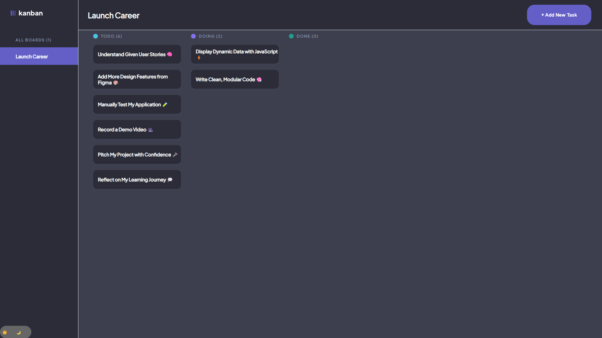
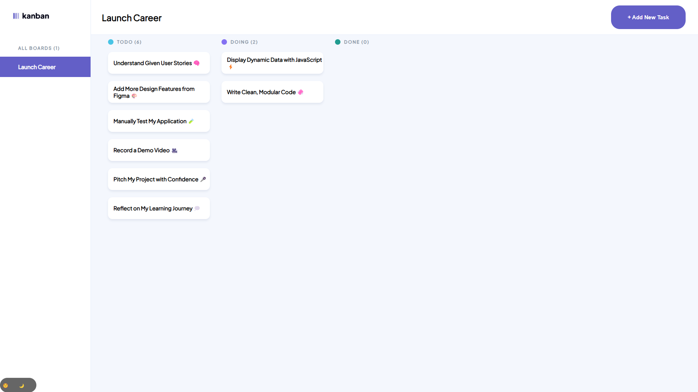

Kanban Board
 
This project was the peak of five intensive weeks focused on JavaScript. It’s a task management app that dynamically renders both starter and user-added tasks. Users can toggle between light and dark mode, manage tasks with ease, and experience a responsive layout across desktop, tablet, and mobile. Fully built and deployed by me.
- HTML
- CSS
- JavaScript